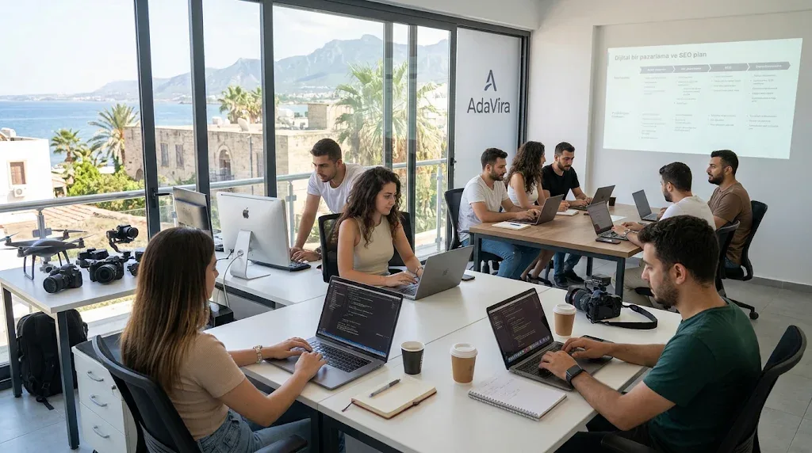

https://adavira.com/bizden-haberler/girne-ve-kktc-isletmeleri-icin-dijitalde-yeni-donem-saha-tecrubesi-ve-olculebilir-buyume · 2026-11-12T19:12:25+00:00
Yıllardır KKTC ve Girne piyasasında sahada edindiğimiz tecrübeyi; web tasarım, yerel SEO, reklam yönetimi ve profesyonel prodüksiyonla tek çatıda topladık.

Kuzey Kıbrıs’ta bir işletmeyi büyütmenin dinamikleri, dışarıdan bakıldığında görünen klasik reklam kurallarından çok farklıdır. Yıllardır Girne’den Lefkoşa’ya, İskele’den Gazimağusa’ya kadar sahada birebir çalıştığımız işletmelerde hep aynı tabloyla karşılaştık: İyi bir ürünü veya kaliteli bir hizmeti olan yerel markalar, dijital dünyada kendilerini doğru anlatamadıkları için potansiyel müşterilerini rakiplerine kaptırıyor.
Biz bu süreci masa başından değil, doğrudan sahanın içinden gelerek öğrendik. Bir emlak danışmanının milyonluk bir villayı tanıtırken yaşadığı görsel eksikliğini de, bir sağlık merkezinin hasta güveni kazanmak için verdiği emeği de, bir oto galerinin stoktaki araçlarını doğru kitleye ulaştırma telaşını da yakından biliyoruz. AdaVira çatısı altında yaptığımız tek şey; yıllara dayanan bu saha birikimini, kurumsal ve sürdürülebilir bir yapıya dönüştürmek oldu.
Bugüne kadar işletmelerin en çok yorulduğu konu, işlerini parça parça farklı kişilere bölmek zorunda kalmalarıydı. Siteyi başka birine yaptıran, fotoğraf çekimi için ayrı ekip arayan, sosyal medyayı ve reklamları ise bir başkasına emanet eden işletmeler günün sonunda ortada bütünlüğü olmayan, birbirinden kopuk işlerle karşılaşıyordu.
Biz süreci en başından tek merkezde topladık. Kurduğumuz altyapıda:
Her sektörün müşterisi farklı sorular sorar ve farklı kriterlere göre karar verir. Bir otel misafirinin rezervasyon yapmadan önce baktığı detaylarla, bir güzellik merkezine randevu alacak danışanın aradığı güven unsurları aynı değildir.
Bu yüzden herkese aynı hazır şablonları sunmak yerine, doğrudan sizin iş modelinize göre hareket ediyoruz. İster portföyünü hızla eritmek isteyen bir Girne emlak ofisi web sitesi ihtiyacı olsun, ister doğrudan rezervasyonlarını artırmayı hedefleyen bir Girne otel web sitesi ve SEO projesi; işe her zaman rakiplerinizi ve hedef kitlenizi analiz ederek başlıyoruz.
Önümüzdeki dönemde bu sayfada sadece duyurularımızı değil; KKTC piyasasında yaptığımız saha çekimlerinden notları, yerel işletmelerin Google’da görünürlüğünü artıracak pratik ipuçlarını ve tamamladığımız projelerin perde arkasını paylaşmaya devam edeceğiz.
İşletmenizin dijitaldeki mevcut durumunu birlikte masaya yatırmak ve neler yapabileceğimizi konuşmak isterseniz, kahvemizi içmeye bekleriz; derseniz iletişim sayfamızdan bize numaranızı bırakın, aynı gün içinde sizi arayalım.